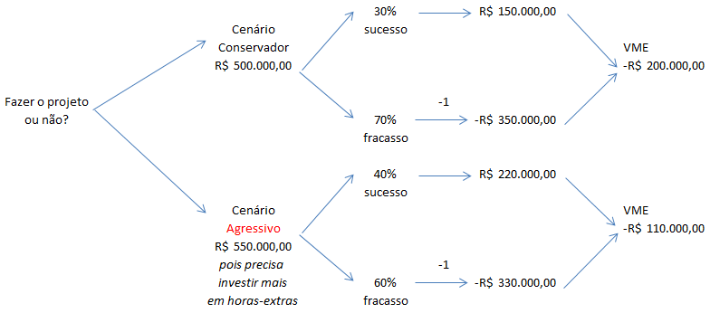

Introdução
Avaliação de Riscos sob Incertezas é o processo de entender o que pode dar errado em uma situação não é certa.
O objetivo é ajudar pessoas e empresas a tomar melhores decisões, planejando como evitar perdas ou aproveitar oportunidades, mesmo quando não se sabe exatamente o que irá acontecer.
Conceitos
Algumas Técnicas de Avaliação de Riscos
As avaliações qualitativas são normalmente subjetivas e se baseiam em opiniões de especialistas, sem a necessidade de dados numéricos precisos.
Brainstorming é uma técnica em que um grupo de pessoas se reúne para gerar ideias e discutir possíveis riscos e soluções. É uma abordagem criativa e colaborativa.
Entrevistas e questionários são técnicas que envolvem a coleta de informações sobre riscos diretamente dos envolvidos no projeto, por meio de perguntas abertas ou fechadas.
A Matriz de Probabilidade e Impacto é usada para classificar riscos de acordo com sua probabilidade de ocorrer (alta, média, baixa) e seu impacto (alto, médio, baixo). Isso ajuda a priorizar os riscos mais significativos para um exame mais detalhado e ações de mitigação.

Esta técnica usa métodos matemáticos e estatísticos para medir e analisar os riscos. Ela é mais precisa e objetiva do que a análise qualitativa e fornece uma visão mais detalhada dos riscos.
A Simulação de Monte Carlo é uma técnica quantitativa que usa modelos estatísticos para prever possíveis resultados ao se considerar as incertezas em um projeto. Ela cria cenários aleatórios para determinar a distribuição dos resultados.
A Análise de Valor Esperado (EVA) é usada para calcular o impacto financeiro médio de riscos, multiplicando a probabilidade de um risco acontecer pelo impacto que ele teria.
Exemplo de EVA:
- Cenário: Imagine que sua empresa está desenvolvendo um novo software e existe o risco de atrasos devido a problemas técnicos.
- Impacto Financeiro: Se o atraso ocorrer, o custo adicional estimado será de USD 80.000 devido a mão de obra extra e penalidades.
- Probabilidade do Risco: Após avaliação, você estima que a chance desse problema técnico acontecer é de 30%.
- Cálculo do Valor Esperado:
- Valor Esperado = Probabilidade × Impacto
- Valor Esperado = 0,3 × 80.000 = USD 24.000
- Conclusão: O impacto financeiro médio esperado desse risco específico é de USD 24.000. Isso significa que, em média, esse risco pode adicionar esse valor ao custo do projeto, e, portanto, deve ser considerado no orçamento.
A Árvore de Decisão é uma ferramenta visual usada para mapear diferentes opções de decisão e seus possíveis resultados, levando em conta a probabilidade e o impacto de cada escolha. Ela ajuda a comparar as alternativas e a decidir qual caminho tomar, considerando riscos e benefícios.
Simulação de Monte Carlo
Como a Simulação de Monte Carlo Influencia os Cassinos
-
Leis dos Grandes Números: À medida que o número de apostas aumenta, os resultados tendem a se aproximar das probabilidades teóricas.

- Vantagem da Casa: Pequena margem estatística que garante lucros consistentes para os cassinos a longo prazo.
- Modelagem de Riscos: Os cassinos utilizam a simulação para prever resultados e gerenciar riscos financeiros.
- Probabilidade de Vencer: A probabilidade de vencer é calculada da seguinte forma:
Probabilidade de Vencer (%) = \(\frac{\text{Partidas Vencidas}}{\text{Partidas Jogadas}} \times 100\)
Configurações da Simulação
Figura 5: Evolução do capital ao longo dos jogos, comparando com o capital inicial.
Impacto Atual no Brasil
Fonte: DataSenado
Fonte: Bet
Fonte: TecMundo - Apostas esportivas devem receber R$ 216 bilhões dos brasileiros em 2024
Fonte: Folha de S.Paulo
Fonte: Agência Brasil

Fonte: InfoMoney
Estudos de Casos
Fonte da imagem: InfoEscola - Crise Econômica Global de 2008
Em mercados financeiros, incertezas como inflação, recessões ou mudanças em políticas monetárias podem impactar investimentos de forma significativa. Um investidor deve ser capaz de avaliar o risco de seus ativos em relação a eventos futuros imprevisíveis.
Uma técnica comum para avaliar esses riscos é a simulação de Monte Carlo, que permite a modelagem de possíveis variações nos retornos financeiros. Além disso, análises de cenários e Value at Risk (VaR) são amplamente utilizados para estimar perdas potenciais em períodos específicos de incerteza.
- Identificação de Riscos: Volatilidade no mercado de ações, mudanças em taxas de juros, crises financeiras.
- Análise: Aplicação de modelos estatísticos e financeiros para prever cenários de variação de preço e retorno.
- Mitigação: Diversificação de investimentos em diferentes setores e regiões geográficas, uso de derivativos para hedge financeiro.
- Exemplo Real: Durante a crise financeira de 2008, muitos fundos de investimento foram afetados pela volatilidade extrema. Investidores que usaram a simulação de Monte Carlo foram capazes de prever os piores cenários e ajustar suas carteiras de acordo.
Fonte da imagem: YouTube - Indústria de Tecnologia
O setor de tecnologia é altamente dinâmico e incerto. O desenvolvimento de novas tecnologias pode ser afetado por incertezas quanto à adoção do mercado, mudanças regulatórias ou até surgimento de concorrentes disruptivos. A avaliação de riscos nesse setor envolve a análise de tendências tecnológicas, preferências do consumidor e ciclos de inovação.
Uma técnica comum para avaliar os riscos em tecnologia é o uso da análise SWOT (forças, fraquezas, oportunidades e ameaças), que ajuda a identificar riscos internos e externos, e a simulação de Monte Carlo, que pode modelar o impacto financeiro de diferentes níveis de adoção de uma tecnologia.
- Identificação de Riscos: Obsolescência tecnológica, rápida evolução do mercado, aceitação do consumidor.
- Análise: Análise de cenários para prever diferentes taxas de adoção e impacto na receita.
- Mitigação: Estratégias de inovação contínua, parcerias estratégicas e forte investimento em pesquisa e desenvolvimento (P&D).
- Exemplo Real: O lançamento do Google Glass enfrentou grandes incertezas quanto à aceitação do consumidor, levando o produto a falhar comercialmente, apesar das altas expectativas iniciais. Empresas de tecnologia frequentemente enfrentam esse tipo de risco ao introduzir novas inovações.
Conclusão
A avaliação de riscos sob incertezas é fundamental para a gestão eficaz de projetos e operações em qualquer organização. Compreender e aplicar técnicas apropriadas permite identificar potenciais ameaças e oportunidades, facilitando a tomada de decisões informadas e a implementação de estratégias de mitigação.